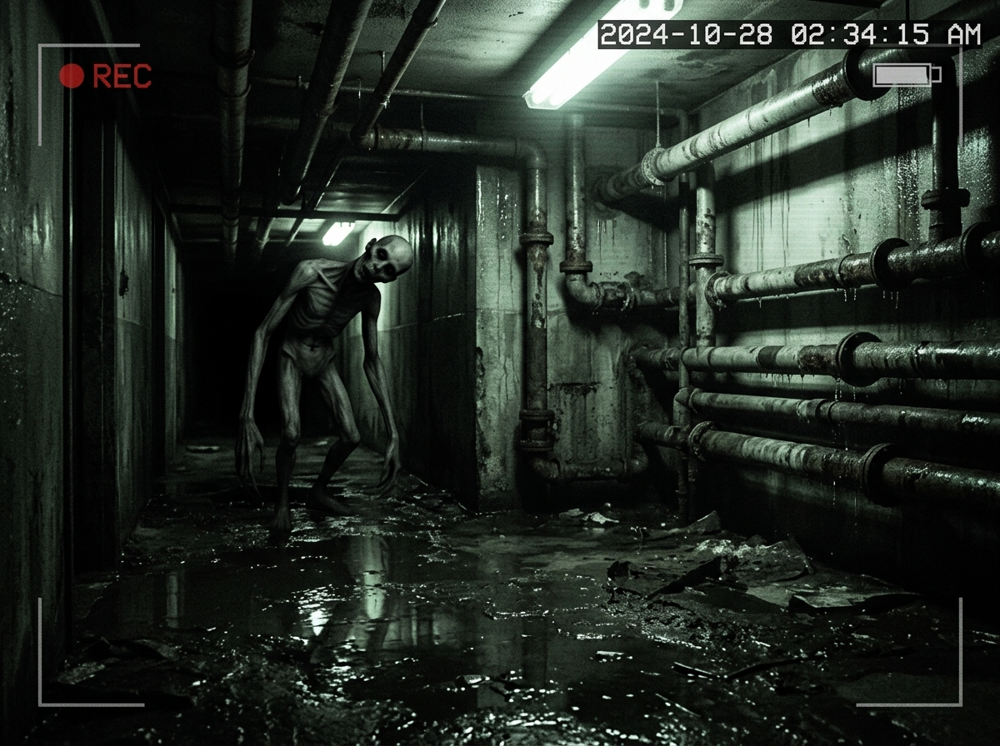

INSTRUÇÕES DO POSTO DE VIGILÂNCIA:
• Você está sozinho no edifício. Seu dever é monitorar as câmeras de CFTV.
• Observe atentamente. Anomalias não são óbvias: sombras fugazes, portas destravadas, silhuetas distantes ou entidades que mudam quando você troca de câmera.
• Ao perceber algo suspeito, clique em REPORTAR ANOMALIA na câmera correta.
• Cuidado com falsos alarmes: após 3 relatórios inválidos, a contenção falha.
• Algo no prédio está ciente de que está sendo observado.
NIGHTWATCH SECURITY // SINAL CFTV ESTABILIZADO

VOCÊ FOI ENCONTRADO
TURNO CONCLUÍDO // 03:59:59
VOCÊ SOBREVIVEU À MADRUGADA.
[04:00:00 AM] O sinal das câmeras começou a sofrer interferência estática severa... CÂMERA 01 — MOVIMENTO DETECTADO NO CORREDOR.
O operador da central de segurança não foi encontrado na cabine.